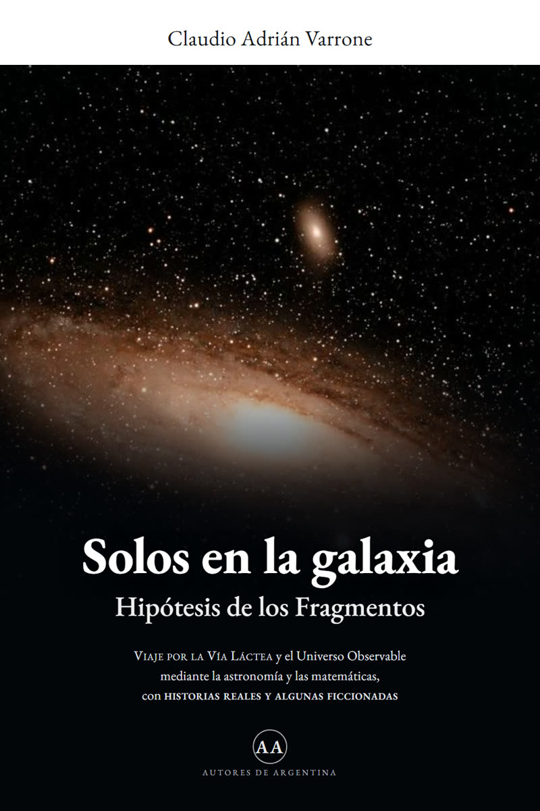
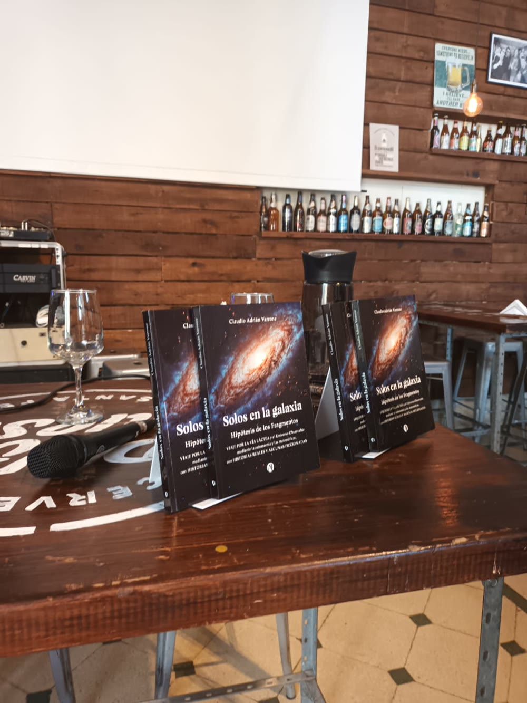
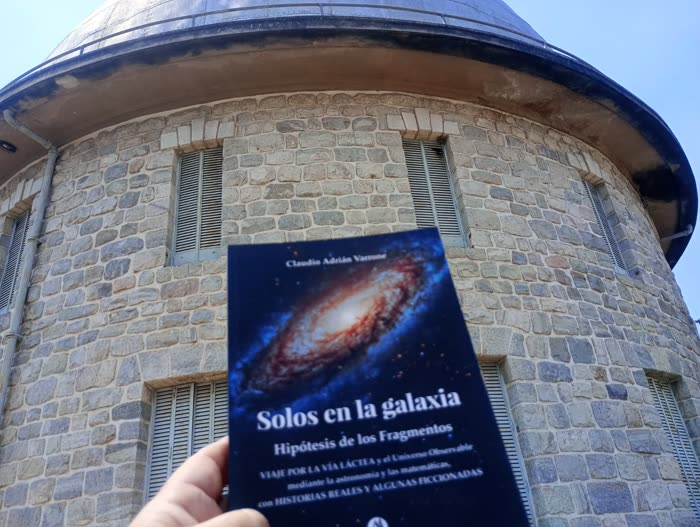
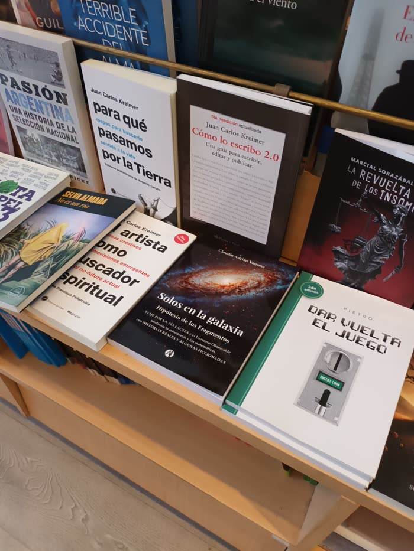
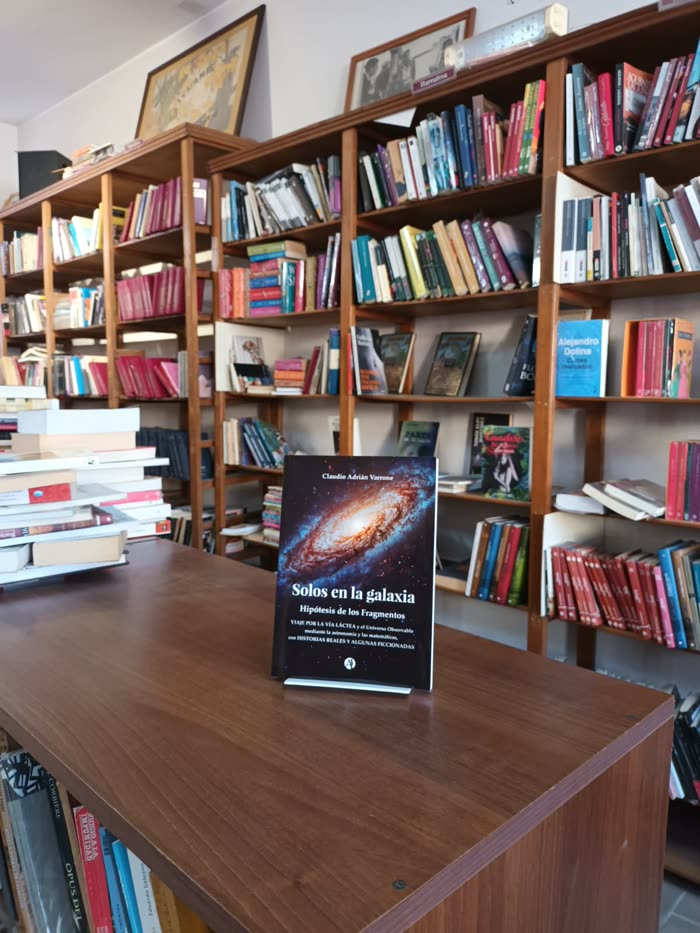
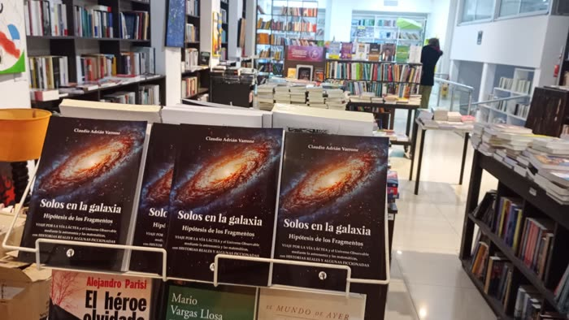
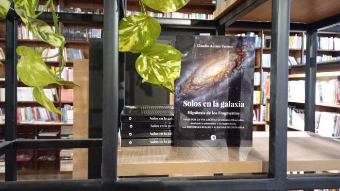

Hipótesis de los Fragmentos
Un viaje por la Vía Láctea y el Universo Observable, contado con astronomía y matemáticas — y con historias reales y algunas ficcionadas.

Editorial Autores de Argentina
De qué se trata
Vivimos en un brazo menor de una galaxia con doscientos mil millones de estrellas.
Miramos hacia afuera hace más de un siglo.
Y hasta hoy, no contestó nadie.
Solos en la galaxia no es un libro de ciencia ficción ni un manual de astronomía. Es un viaje: arranca en el Sistema Solar, cruza el Brazo de Orión, atraviesa la Vía Láctea y llega al borde de lo que podemos ver. Con números reales, con distancias que marean, y con historias — algunas verdaderas, otras imaginadas — que ponen escala humana a todo eso.
La estructura del libro
Seis escalas, de nuestro barrio cósmico hasta el límite de lo observable. Tocá cualquier punto de la espiral para ver de qué habla.
Girá por los brazos · 6 fragmentos
Fragmento 01
Escala: 9.000 millones de km
Nuestro barrio. Ocho planetas, un cinturón de rocas y una estrella común y corriente. El capítulo donde se aprende a leer distancias: cuánto tarda la luz del Sol en llegarnos, y por qué todo lo que sigue va a ser mucho, mucho más grande.

Quién escribe
Nacido en Santa Fe en 1972. A los 9 años tuvo sus primeros prismáticos para cotejar el cielo; a los 13, un viernes 13 de diciembre de 1985, se asoció al Centro Observadores Del Espacio (C.O.D.E.). Nunca dejó de mirar hacia arriba.
Se asocia al C.O.D.E. y cursa Matemática, Cosmografía y Construcción de Telescopios con los profesores Jorge Coghlan y Ángel Meynet.
Construye su primer telescopio reflector propio.
Receptor de datos del proyecto SETI (Search for Extraterrestrial Intelligence), analizando señales de radio en la plataforma BOINC de la Universidad de California, Berkeley.
Funda su propia empresa para la comercialización e intercambio de telescopios por Internet.
Dicta cursos de astronomía y escribe Solos en la galaxia, todavía buscando la misma respuesta: ¿estamos solos o acompañados en el Universo Observable?
Nacido un martes 31 de octubre de 1972 en la ciudad de Santa Fe (Provincia de Santa Fe, Argentina), cursó sus estudios en la Escuela Primaria Nº 15 "Juan de Garay" de Santo Tomé, y los secundarios en la Escuela de Educación Secundaria Orientada Nº 443 (ex Comercio), también de Santo Tomé. A los 9 años tuvo sus primeros prismáticos para cotejar el cielo. A los 13, un viernes 13 de diciembre de 1985, se asoció al Centro Observadores Del Espacio (C.O.D.E.) bajo el número de asociado 531, donde realizó los Cursos Anuales de Matemática y Cosmografía dictados por los profesores Jorge Coghlan y Ángel Meynet, además de los Cursos de Construcción de Telescopios reflectores. A los 23 años construyó su primer telescopio reflector. Con el tiempo presentó proyectos en Santo Tomé para crear un lugar de observación propio. Participó como receptor de datos en el proyecto SETI@home (Search for Extraterrestrial Intelligence), analizando señales de radio en busca de orígenes de inteligencia extraterrestre, sobre la plataforma BOINC (Berkeley Open Infrastructure for Network Computing) desarrollada por el Space Sciences Laboratory de la Universidad de California en Berkeley. Dictó cursos de astronomía para entusiastas y estudiantes primarios y secundarios. Fundó la empresa ArTelescopio para la comercialización e intercambio de telescopios por Internet. Actualmente sigue buscando las respuestas de si estamos solos o acompañados en el Universo Observable.
“La astronomía no te hace sentir chiquito. Te hace sentir parte de algo enorme.”
Dónde conseguirlo
Ya está en librerías de Rosario, Santa Fe, Paraná y más ciudades — y se pide como ebook desde más de 30 países.





Y en 20 páginas más asociadas alrededor del mundo.
Escribime y coordinamos condiciones y envío. Sumo tu local a esta lista.
En cámara
Entrevistas en radio, streaming y TV donde Claudio cuenta cómo nació “Solos en la galaxia”. Tocá cualquiera para verla en YouTube.
Directo con el autor
Armá tu pedido acá y te llega el mensaje ya escrito a mi WhatsApp. Si querés dedicatoria, la escribo a mano antes de despacharlo.